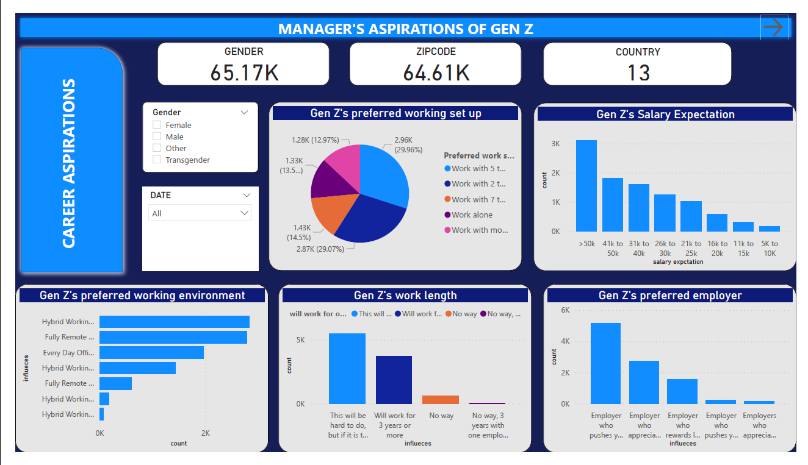
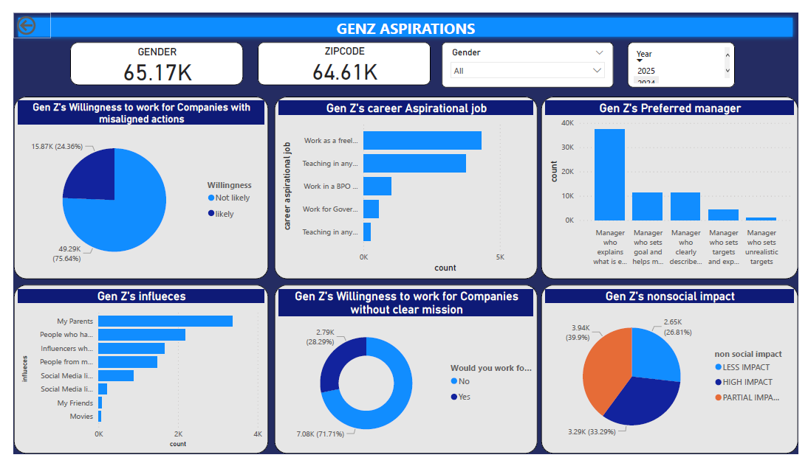

In today’s evolving work environment, Gen-Z is becoming a dominant part of the global workforce. Businesses are increasingly facing difficulty in attracting, engaging, and retaining Gen-Z employees. This poses a significant business challenge because:
- Talent Retention Impacts Performance and Profitability: High turnover rates among Gen-Z employees lead to increased recruitment and training costs. Losing young, innovative talent also affects continuity and knowledge retention within teams.
- Employer Branding and Talent Acquisition: Companies that fail to meet Gen-Z’s expectations face reputational risks on LinkedIn, Glassdoor, or X (formerly Twitter), reducing the quality of applicants they attract.
- Mismatch Between Job Roles and Aspirations: Many Gen-Zs pursue careers that reflect personal values and creativity, but employers often emphasize stability and hierarchy.
- Changing Nature of Work: Gen-Z expects tech-driven collaboration and flexible models. Employers who haven’t adapted are perceived as outdated.
📌 Objective

This project explores the misalignment between Gen Z professionals and traditional employers through case observations, data-backed reasoning, and personal experiences. It aims to help organizations improve Gen Z recruitment, engagement, and retention strategies.
View Full Project on GitHub